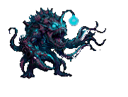

Itsasoa kutsatuta dago eta Buruak ez du utziko hura garbitzen.
Galderei erantzun behar diezu. Asmatzen baduzu, Buruak bihotz bat galduko du. Huts egiten baduzu, zuk galduko duzu bat.
Zuk 3 bihotz dituzu eta Buruak 5.
